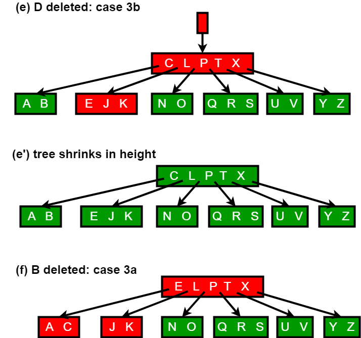
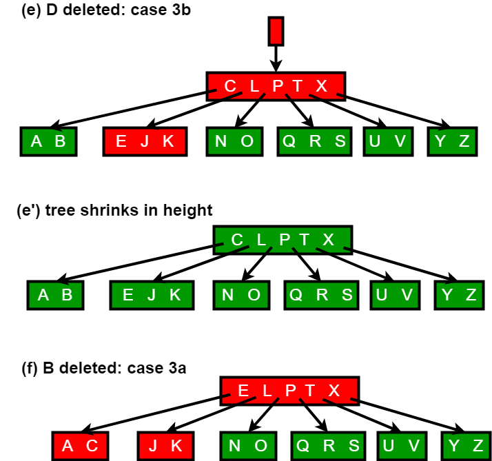

B Tree. 3. Delete Operation
B-Tree. 3. Delete Operation
B-Tree is a type of a multi-way search tree. So, if you are not familiar with multi-way search trees in general, it is better to take a look at this video lecture from IIT-Delhi, before proceeding further. Once you get the basics of a multi-way search tree clear, B-Tree operations will be easier to understand.
Source of the following explanation and algorithm is Introduction to Algorithms 3rd Edition by Clifford Stein, Thomas H. Cormen, Charles E. Leiserson, Ronald L. Rivest
Deletion process: Deletion from a B-tree is more complicated than insertion, because we can delete a key from any node-not just a leaf—and when we delete a key from an internal node, we will have to rearrange the node’s children.
As in insertion, we must make sure the deletion doesn’t violate the B-tree properties. Just as we had to ensure that a node didn’t get too big due to insertion, we must ensure that a node doesn’t get too small during deletion (except that the root is allowed to have fewer than the minimum number t-1 of keys). Just as a simple insertion algorithm might have to back up if a node on the path to where the key was to be inserted was full, a simple approach to deletion might have to back up if a node (other than the root) along the path to where the key is to be deleted has the minimum number of keys.
The deletion procedure deletes the key k from the subtree rooted at x. This procedure guarantees that whenever it calls itself recursively on a node x, the number of keys in x is at least the minimum degree t . Note that this condition requires one more key than the minimum required by the usual B-tree conditions, so that sometimes a key may have to be moved into a child node before recursion descends to that child. This strengthened condition allows us to delete a key from the tree in one downward pass without having to “back up” (with one exception, which we’ll explain). You should interpret the following specification for deletion from a B-tree with the understanding that if the root node x ever becomes an internal node having no keys (this situation can occur in cases 2c and 3b then we delete x, and x’s only child x.c1 becomes the new root of the tree, decreasing the height of the tree by one and preserving the property that the root of the tree contains at least one key (unless the tree is empty).
We sketch how deletion works with various cases of deleting keys from a B-tree.
1. If the key k is in node x and x is a leaf, delete the key k from x.
2. If the key k is in node x and x is an internal node, do the following.
a) If the child y that precedes k in node x has at least t keys, then find the predecessor k0 of k in the sub-tree rooted at y. Recursively delete k0, and replace k by k0 in x. (We can find k0 and delete it in a single downward pass.)
b) If y has fewer than t keys, then, symmetrically, examine the child z that follows k in node x. If z has at least t keys, then find the successor k0 of k in the subtree rooted at z. Recursively delete k0, and replace k by k0 in x. (We can find k0 and delete it in a single downward pass.)
c) Otherwise, if both y and z have only t-1 keys, merge k and all of z into y, so that x loses both k and the pointer to z, and y now contains 2t-1 keys. Then free z and recursively delete k from y.
3. If the key k is not present in internal node x, determine the root x.c(i) of the appropriate subtree that must contain k, if k is in the tree at all. If x.c(i) has only t-1 keys, execute step 3a or 3b as necessary to guarantee that we descend to a node containing at least t keys. Then finish by recursing on the appropriate child of x.
a) If x.c(i) has only t-1 keys but has an immediate sibling with at least t keys, give x.c(i) an extra key by moving a key from x down into x.c(i), moving a key from x.c(i) ’s immediate left or right sibling up into x, and moving the appropriate child pointer from the sibling into x.c(i).
b) If x.c(i) and both of x.c(i)’s immediate siblings have t-1 keys, merge x.c(i) with one sibling, which involves moving a key from x down into the new merged node to become the median key for that node.
Since most of the keys in a B-tree are in the leaves, deletion operations are most often used to delete keys from leaves. The recursive delete procedure then acts in one downward pass through the tree, without having to back up. When deleting a key in an internal node, however, the procedure makes a downward pass through the tree but may have to return to the node from which the key was deleted to replace the key with its predecessor or successor (cases 2a and 2b).
The following figures explain the deletion process.
 

{kind=link}
Implementation: Following is C++ implementation of deletion process.
/* The following program performs deletion on a B-Tree. It contains functions
specific for deletion along with all the other functions provided in the
previous articles on B-Trees. See https://www.geeksforgeeks.org/b-tree-set-1-introduction-2/
for previous article.
The deletion function has been compartmentalized into 8 functions for ease
of understanding and clarity
The following functions are exclusive for deletion
In class BTreeNode:
1) remove
2) removeFromLeaf
3) removeFromNonLeaf
4) getPred
5) getSucc
6) borrowFromPrev
7) borrowFromNext
8) merge
9) findKey
In class BTree:
1) remove
The removal of a key from a B-Tree is a fairly complicated process. The program handles
all the 6 different cases that might arise while removing a key.
Testing: The code has been tested using the B-Tree provided in the CLRS book( included
in the main function ) along with other cases.
Reference: CLRS3 - Chapter 18 - (499-502)
It is advised to read the material in CLRS before taking a look at the code. */
#include<iostream>
using namespace std;
// A BTree node
class BTreeNode
{
int *keys; // An array of keys
int t; // Minimum degree (defines the range for number of keys)
BTreeNode **C; // An array of child pointers
int n; // Current number of keys
bool leaf; // Is true when node is leaf. Otherwise false
public:
BTreeNode(int _t, bool _leaf); // Constructor
// A function to traverse all nodes in a subtree rooted with this node
void traverse();
// A function to search a key in subtree rooted with this node.
BTreeNode *search(int k); // returns NULL if k is not present.
// A function that returns the index of the first key that is greater
// or equal to k
int findKey(int k);
// A utility function to insert a new key in the subtree rooted with
// this node. The assumption is, the node must be non-full when this
// function is called
void insertNonFull(int k);
// A utility function to split the child y of this node. i is index
// of y in child array C[]. The Child y must be full when this
// function is called
void splitChild(int i, BTreeNode *y);
// A wrapper function to remove the key k in subtree rooted with
// this node.
void remove(int k);
// A function to remove the key present in idx-th position in
// this node which is a leaf
void removeFromLeaf(int idx);
// A function to remove the key present in idx-th position in
// this node which is a non-leaf node
void removeFromNonLeaf(int idx);
// A function to get the predecessor of the key- where the key
// is present in the idx-th position in the node
int getPred(int idx);
// A function to get the successor of the key- where the key
// is present in the idx-th position in the node
int getSucc(int idx);
// A function to fill up the child node present in the idx-th
// position in the C[] array if that child has less than t-1 keys
void fill(int idx);
// A function to borrow a key from the C[idx-1]-th node and place
// it in C[idx]th node
void borrowFromPrev(int idx);
// A function to borrow a key from the C[idx+1]-th node and place it
// in C[idx]th node
void borrowFromNext(int idx);
// A function to merge idx-th child of the node with (idx+1)th child of
// the node
void merge(int idx);
// Make BTree friend of this so that we can access private members of
// this class in BTree functions
friend class BTree;
};
class BTree
{
BTreeNode *root; // Pointer to root node
int t; // Minimum degree
public:
// Constructor (Initializes tree as empty)
BTree(int _t)
{
root = NULL;
t = _t;
}
void traverse()
{
if (root != NULL) root->traverse();
}
// function to search a key in this tree
BTreeNode* search(int k)
{
return (root == NULL)? NULL : root->search(k);
}
// The main function that inserts a new key in this B-Tree
void insert(int k);
// The main function that removes a new key in thie B-Tree
void remove(int k);
};
BTreeNode::BTreeNode(int t1, bool leaf1)
{
// Copy the given minimum degree and leaf property
t = t1;
leaf = leaf1;
// Allocate memory for maximum number of possible keys
// and child pointers
keys = new int[2*t-1];
C = new BTreeNode *[2*t];
// Initialize the number of keys as 0
n = 0;
}
// A utility function that returns the index of the first key that is
// greater than or equal to k
int BTreeNode::findKey(int k)
{
int idx=0;
while (idx<n && keys[idx] < k)
++idx;
return idx;
}
// A function to remove the key k from the sub-tree rooted with this node
void BTreeNode::remove(int k)
{
int idx = findKey(k);
// The key to be removed is present in this node
if (idx < n && keys[idx] == k)
{
// If the node is a leaf node - removeFromLeaf is called
// Otherwise, removeFromNonLeaf function is called
if (leaf)
removeFromLeaf(idx);
else
removeFromNonLeaf(idx);
}
else
{
// If this node is a leaf node, then the key is not present in tree
if (leaf)
{
cout << "The key "<< k <<" is does not exist in the tree\n";
return;
}
// The key to be removed is present in the sub-tree rooted with this node
// The flag indicates whether the key is present in the sub-tree rooted
// with the last child of this node
bool flag = ( (idx==n)? true : false );
// If the child where the key is supposed to exist has less that t keys,
// we fill that child
if (C[idx]->n < t)
fill(idx);
// If the last child has been merged, it must have merged with the previous
// child and so we recurse on the (idx-1)th child. Else, we recurse on the
// (idx)th child which now has atleast t keys
if (flag && idx > n)
C[idx-1]->remove(k);
else
C[idx]->remove(k);
}
return;
}
// A function to remove the idx-th key from this node - which is a leaf node
void BTreeNode::removeFromLeaf (int idx)
{
// Move all the keys after the idx-th pos one place backward
for (int i=idx+1; i<n; ++i)
keys[i-1] = keys[i];
// Reduce the count of keys
n--;
return;
}
// A function to remove the idx-th key from this node - which is a non-leaf node
void BTreeNode::removeFromNonLeaf(int idx)
{
int k = keys[idx];
// If the child that precedes k (C[idx]) has atleast t keys,
// find the predecessor 'pred' of k in the subtree rooted at
// C[idx]. Replace k by pred. Recursively delete pred
// in C[idx]
if (C[idx]->n >= t)
{
int pred = getPred(idx);
keys[idx] = pred;
C[idx]->remove(pred);
}
// If the child C[idx] has less that t keys, examine C[idx+1].
// If C[idx+1] has atleast t keys, find the successor 'succ' of k in
// the subtree rooted at C[idx+1]
// Replace k by succ
// Recursively delete succ in C[idx+1]
else if (C[idx+1]->n >= t)
{
int succ = getSucc(idx);
keys[idx] = succ;
C[idx+1]->remove(succ);
}
// If both C[idx] and C[idx+1] has less that t keys,merge k and all of C[idx+1]
// into C[idx]
// Now C[idx] contains 2t-1 keys
// Free C[idx+1] and recursively delete k from C[idx]
else
{
merge(idx);
C[idx]->remove(k);
}
return;
}
// A function to get predecessor of keys[idx]
int BTreeNode::getPred(int idx)
{
// Keep moving to the right most node until we reach a leaf
BTreeNode *cur=C[idx];
while (!cur->leaf)
cur = cur->C[cur->n];
// Return the last key of the leaf
return cur->keys[cur->n-1];
}
int BTreeNode::getSucc(int idx)
{
// Keep moving the left most node starting from C[idx+1] until we reach a leaf
BTreeNode *cur = C[idx+1];
while (!cur->leaf)
cur = cur->C[0];
// Return the first key of the leaf
return cur->keys[0];
}
// A function to fill child C[idx] which has less than t-1 keys
void BTreeNode::fill(int idx)
{
// If the previous child(C[idx-1]) has more than t-1 keys, borrow a key
// from that child
if (idx!=0 && C[idx-1]->n>=t)
borrowFromPrev(idx);
// If the next child(C[idx+1]) has more than t-1 keys, borrow a key
// from that child
else if (idx!=n && C[idx+1]->n>=t)
borrowFromNext(idx);
// Merge C[idx] with its sibling
// If C[idx] is the last child, merge it with with its previous sibling
// Otherwise merge it with its next sibling
else
{
if (idx != n)
merge(idx);
else
merge(idx-1);
}
return;
}
// A function to borrow a key from C[idx-1] and insert it
// into C[idx]
void BTreeNode::borrowFromPrev(int idx)
{
BTreeNode *child=C[idx];
BTreeNode *sibling=C[idx-1];
// The last key from C[idx-1] goes up to the parent and key[idx-1]
// from parent is inserted as the first key in C[idx]. Thus, the loses
// sibling one key and child gains one key
// Moving all key in C[idx] one step ahead
for (int i=child->n-1; i>=0; --i)
child->keys[i+1] = child->keys[i];
// If C[idx] is not a leaf, move all its child pointers one step ahead
if (!child->leaf)
{
for(int i=child->n; i>=0; --i)
child->C[i+1] = child->C[i];
}
// Setting child's first key equal to keys[idx-1] from the current node
child->keys[0] = keys[idx-1];
// Moving sibling's last child as C[idx]'s first child
if(!child->leaf)
child->C[0] = sibling->C[sibling->n];
// Moving the key from the sibling to the parent
// This reduces the number of keys in the sibling
keys[idx-1] = sibling->keys[sibling->n-1];
child->n += 1;
sibling->n -= 1;
return;
}
// A function to borrow a key from the C[idx+1] and place
// it in C[idx]
void BTreeNode::borrowFromNext(int idx)
{
BTreeNode *child=C[idx];
BTreeNode *sibling=C[idx+1];
// keys[idx] is inserted as the last key in C[idx]
child->keys[(child->n)] = keys[idx];
// Sibling's first child is inserted as the last child
// into C[idx]
if (!(child->leaf))
child->C[(child->n)+1] = sibling->C[0];
//The first key from sibling is inserted into keys[idx]
keys[idx] = sibling->keys[0];
// Moving all keys in sibling one step behind
for (int i=1; i<sibling->n; ++i)
sibling->keys[i-1] = sibling->keys[i];
// Moving the child pointers one step behind
if (!sibling->leaf)
{
for(int i=1; i<=sibling->n; ++i)
sibling->C[i-1] = sibling->C[i];
}
// Increasing and decreasing the key count of C[idx] and C[idx+1]
// respectively
child->n += 1;
sibling->n -= 1;
return;
}
// A function to merge C[idx] with C[idx+1]
// C[idx+1] is freed after merging
void BTreeNode::merge(int idx)
{
BTreeNode *child = C[idx];
BTreeNode *sibling = C[idx+1];
// Pulling a key from the current node and inserting it into (t-1)th
// position of C[idx]
child->keys[t-1] = keys[idx];
// Copying the keys from C[idx+1] to C[idx] at the end
for (int i=0; i<sibling->n; ++i)
child->keys[i+t] = sibling->keys[i];
// Copying the child pointers from C[idx+1] to C[idx]
if (!child->leaf)
{
for(int i=0; i<=sibling->n; ++i)
child->C[i+t] = sibling->C[i];
}
// Moving all keys after idx in the current node one step before -
// to fill the gap created by moving keys[idx] to C[idx]
for (int i=idx+1; i<n; ++i)
keys[i-1] = keys[i];
// Moving the child pointers after (idx+1) in the current node one
// step before
for (int i=idx+2; i<=n; ++i)
C[i-1] = C[i];
// Updating the key count of child and the current node
child->n += sibling->n+1;
n--;
// Freeing the memory occupied by sibling
delete(sibling);
return;
}
// The main function that inserts a new key in this B-Tree
void BTree::insert(int k)
{
// If tree is empty
if (root == NULL)
{
// Allocate memory for root
root = new BTreeNode(t, true);
root->keys[0] = k; // Insert key
root->n = 1; // Update number of keys in root
}
else // If tree is not empty
{
// If root is full, then tree grows in height
if (root->n == 2*t-1)
{
// Allocate memory for new root
BTreeNode *s = new BTreeNode(t, false);
// Make old root as child of new root
s->C[0] = root;
// Split the old root and move 1 key to the new root
s->splitChild(0, root);
// New root has two children now. Decide which of the
// two children is going to have new key
int i = 0;
if (s->keys[0] < k)
i++;
s->C[i]->insertNonFull(k);
// Change root
root = s;
}
else // If root is not full, call insertNonFull for root
root->insertNonFull(k);
}
}
// A utility function to insert a new key in this node
// The assumption is, the node must be non-full when this
// function is called
void BTreeNode::insertNonFull(int k)
{
// Initialize index as index of rightmost element
int i = n-1;
// If this is a leaf node
if (leaf == true)
{
// The following loop does two things
// a) Finds the location of new key to be inserted
// b) Moves all greater keys to one place ahead
while (i >= 0 && keys[i] > k)
{
keys[i+1] = keys[i];
i--;
}
// Insert the new key at found location
keys[i+1] = k;
n = n+1;
}
else // If this node is not leaf
{
// Find the child which is going to have the new key
while (i >= 0 && keys[i] > k)
i--;
// See if the found child is full
if (C[i+1]->n == 2*t-1)
{
// If the child is full, then split it
splitChild(i+1, C[i+1]);
// After split, the middle key of C[i] goes up and
// C[i] is splitted into two. See which of the two
// is going to have the new key
if (keys[i+1] < k)
i++;
}
C[i+1]->insertNonFull(k);
}
}
// A utility function to split the child y of this node
// Note that y must be full when this function is called
void BTreeNode::splitChild(int i, BTreeNode *y)
{
// Create a new node which is going to store (t-1) keys
// of y
BTreeNode *z = new BTreeNode(y->t, y->leaf);
z->n = t - 1;
// Copy the last (t-1) keys of y to z
for (int j = 0; j < t-1; j++)
z->keys[j] = y->keys[j+t];
// Copy the last t children of y to z
if (y->leaf == false)
{
for (int j = 0; j < t; j++)
z->C[j] = y->C[j+t];
}
// Reduce the number of keys in y
y->n = t - 1;
// Since this node is going to have a new child,
// create space of new child
for (int j = n; j >= i+1; j--)
C[j+1] = C[j];
// Link the new child to this node
C[i+1] = z;
// A key of y will move to this node. Find location of
// new key and move all greater keys one space ahead
for (int j = n-1; j >= i; j--)
keys[j+1] = keys[j];
// Copy the middle key of y to this node
keys[i] = y->keys[t-1];
// Increment count of keys in this node
n = n + 1;
}
// Function to traverse all nodes in a subtree rooted with this node
void BTreeNode::traverse()
{
// There are n keys and n+1 children, travers through n keys
// and first n children
int i;
for (i = 0; i < n; i++)
{
// If this is not leaf, then before printing key[i],
// traverse the subtree rooted with child C[i].
if (leaf == false)
C[i]->traverse();
cout << " " << keys[i];
}
// Print the subtree rooted with last child
if (leaf == false)
C[i]->traverse();
}
// Function to search key k in subtree rooted with this node
BTreeNode *BTreeNode::search(int k)
{
// Find the first key greater than or equal to k
int i = 0;
while (i < n && k > keys[i])
i++;
// If the found key is equal to k, return this node
if (keys[i] == k)
return this;
// If key is not found here and this is a leaf node
if (leaf == true)
return NULL;
// Go to the appropriate child
return C[i]->search(k);
}
void BTree::remove(int k)
{
if (!root)
{
cout << "The tree is empty\n";
return;
}
// Call the remove function for root
root->remove(k);
// If the root node has 0 keys, make its first child as the new root
// if it has a child, otherwise set root as NULL
if (root->n==0)
{
BTreeNode *tmp = root;
if (root->leaf)
root = NULL;
else
root = root->C[0];
// Free the old root
delete tmp;
}
return;
}
// Driver program to test above functions
int main()
{
BTree t(3); // A B-Tree with minium degree 3
t.insert(1);
t.insert(3);
t.insert(7);
t.insert(10);
t.insert(11);
t.insert(13);
t.insert(14);
t.insert(15);
t.insert(18);
t.insert(16);
t.insert(19);
t.insert(24);
t.insert(25);
t.insert(26);
t.insert(21);
t.insert(4);
t.insert(5);
t.insert(20);
t.insert(22);
t.insert(2);
t.insert(17);
t.insert(12);
t.insert(6);
cout << "Traversal of tree constructed is\n";
t.traverse();
cout << endl;
t.remove(6);
cout << "Traversal of tree after removing 6\n";
t.traverse();
cout << endl;
t.remove(13);
cout << "Traversal of tree after removing 13\n";
t.traverse();
cout << endl;
t.remove(7);
cout << "Traversal of tree after removing 7\n";
t.traverse();
cout << endl;
t.remove(4);
cout << "Traversal of tree after removing 4\n";
t.traverse();
cout << endl;
t.remove(2);
cout << "Traversal of tree after removing 2\n";
t.traverse();
cout << endl;
t.remove(16);
cout << "Traversal of tree after removing 16\n";
t.traverse();
cout << endl;
return 0;
}
Output:
Traversal of tree constructed is
1 2 3 4 5 6 7 10 11 12 13 14 15 16 17 18 19 20 21 22 24 25 26
Traversal of tree after removing 6
1 2 3 4 5 7 10 11 12 13 14 15 16 17 18 19 20 21 22 24 25 26
Traversal of tree after removing 13
1 2 3 4 5 7 10 11 12 14 15 16 17 18 19 20 21 22 24 25 26
Traversal of tree after removing 7
1 2 3 4 5 10 11 12 14 15 16 17 18 19 20 21 22 24 25 26
Traversal of tree after removing 4
1 2 3 5 10 11 12 14 15 16 17 18 19 20 21 22 24 25 26
Traversal of tree after removing 2
1 3 5 10 11 12 14 15 16 17 18 19 20 21 22 24 25 26
Traversal of tree after removing 16
1 3 5 10 11 12 14 15 17 18 19 20 21 22 24 25 26